Nebali: The Lost Island
Una aventura acogedora en tercera persona sobre un náufrago, una isla pequeña y la gente que vive en ella. La hice yo sola como trabajo de fin de grado: el diseño, la historia, el código, el arte 3D, los shaders y la interfaz.
Se reproduce desde YouTube. No se carga nada hasta que pulsas.
- Mi rol
- Desarrolladora en solitario: diseño, guion, programación, arte 3D, shaders e interfaz
- Contexto
- Trabajo de fin de grado, Grado en Diseño y Desarrollo de Videojuegos, Universitat Jaume I
- Hecho con
- Unity (URP), C#, Blender, Clip Studio Paint
La idea
Mateo despierta en una isla desconocida tras un naufragio. Para volver a casa tiene que liberarla de los Boos, pequeñas criaturas que representan los pensamientos intrusivos, y por el camino conoce a sus habitantes.
Quería un juego que tratara la salud mental sin ser un juego terapéutico: divertido para cualquiera, con personajes en los que reconocerse. Brivia es una luchadora a la que le cuesta pedir ayuda, Edbri es un alcalde que siente que nunca es suficiente y Leeba es un viejo pescador que acaba confesando que se siente solo.
Del boceto al juego
Todos los personajes empezaron como un boceto a lápiz. Los modelé en Blender: el pelo con curvas, la ropa cortada a partir de patrones de costura reales y ajustada con simulación de tela, y un mismo cuerpo base para todos los habitantes, de forma que un personaje nuevo solo necesita ropa y pelo nuevos.
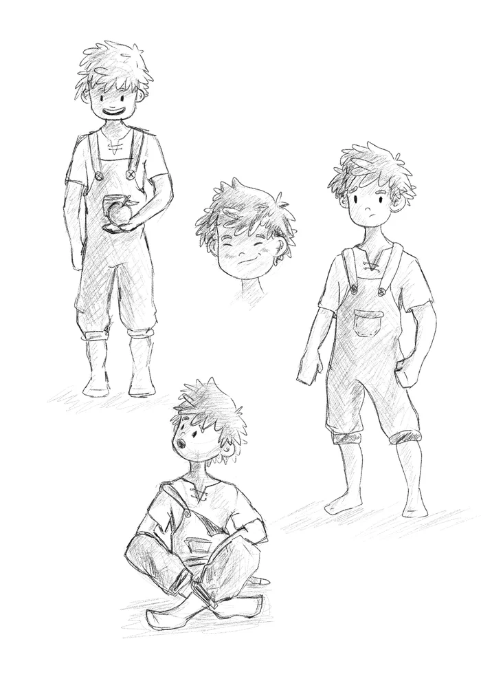
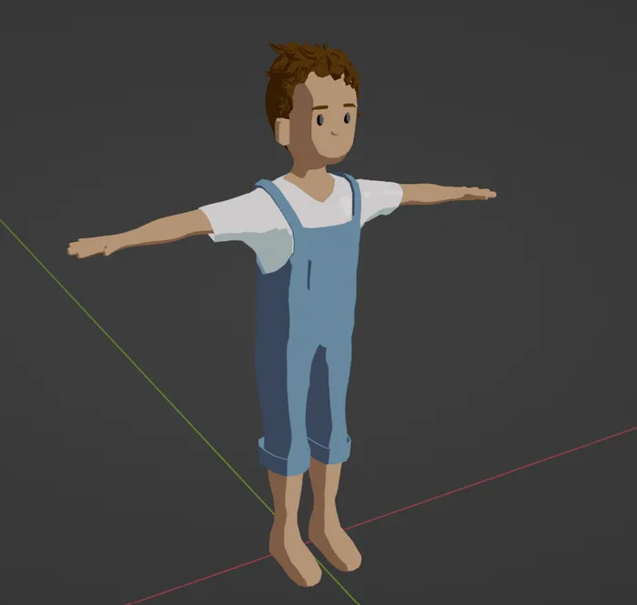
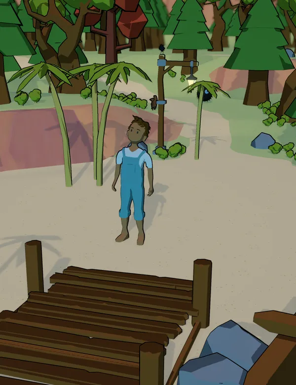
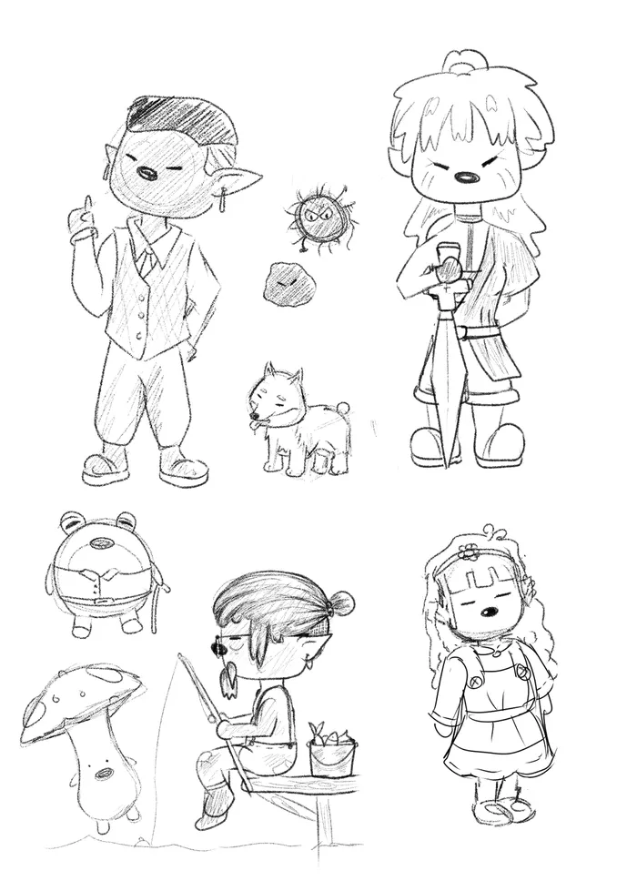
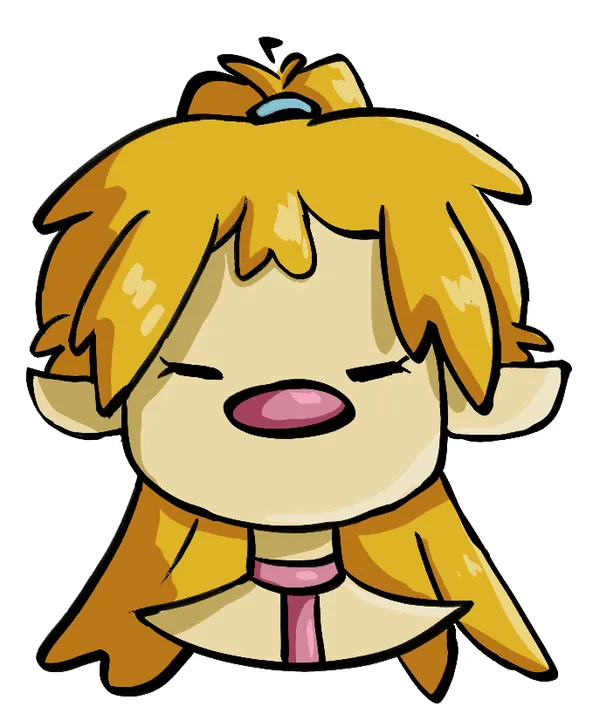
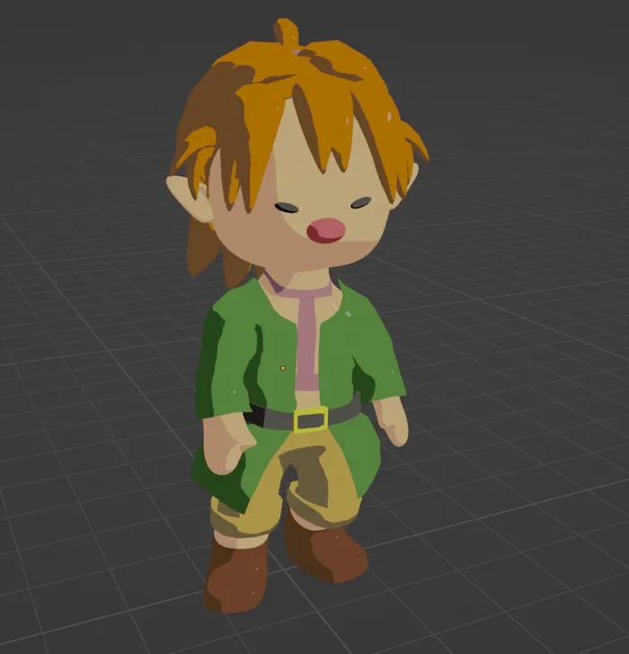
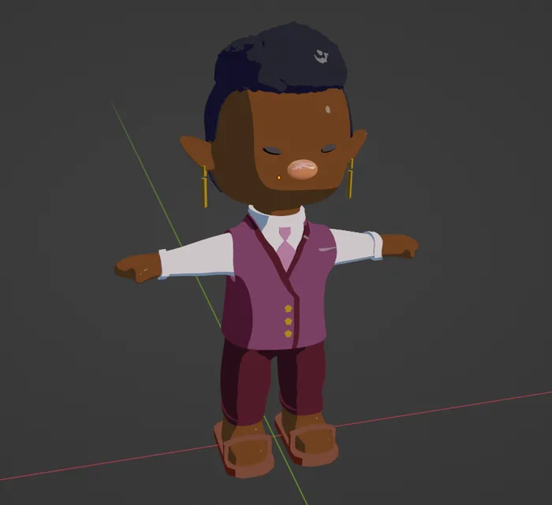
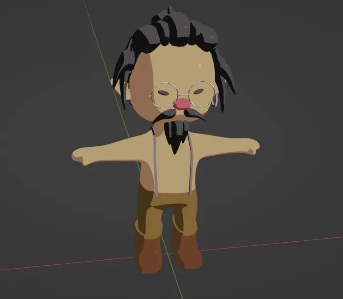
El resto de habitantes comparten el mismo cuerpo base; solo cambian la ropa y el pelo.
Las animaciones vienen de Mixamo, ajustadas en Blender.
Shaders
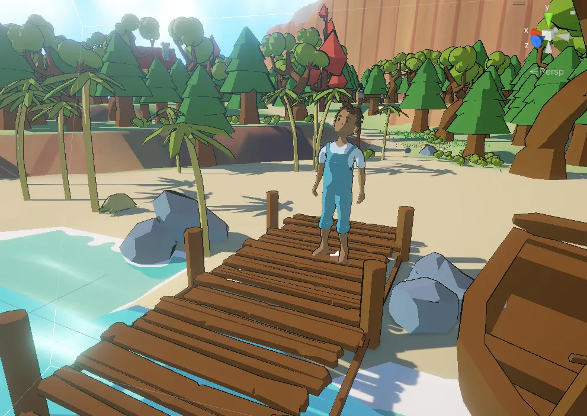
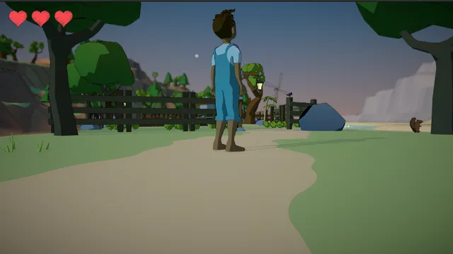
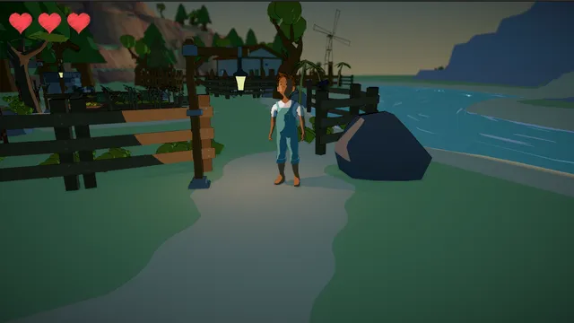
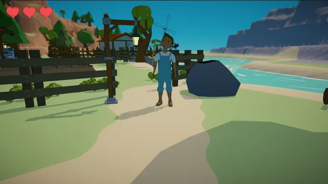
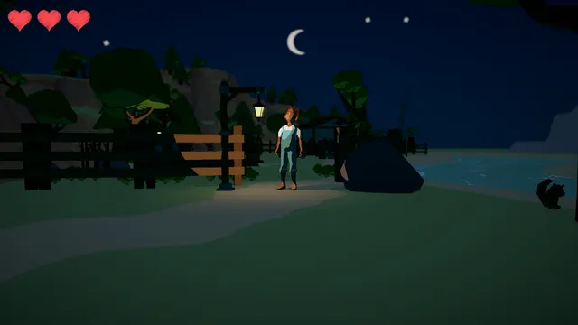
Un sistema de diálogos por nodos
El juego gira alrededor de las conversaciones, así que antes de escribirlas creé una herramienta para escribirlas. Es una ventana de editor dentro de Unity, hecha con la API GraphView, en la que cada nodo guarda un personaje y una frase y puede ramificarse en varias opciones.
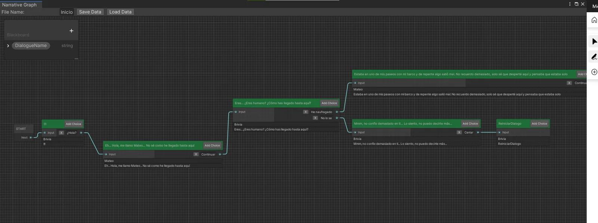
- Los grafos se guardan y cargan como assets ScriptableObject que cualquier script puede leer.
- Una pizarra guarda variables, como nombres, que cualquier frase puede usar.
- Un parser reproduce el grafo en el juego: el texto aparece como en una máquina de escribir y las opciones salen al terminar la frase.
- Cada personaje habla con pitidos cortos a un tono aleatorio dentro de su propio rango, así que cada uno tiene su voz.
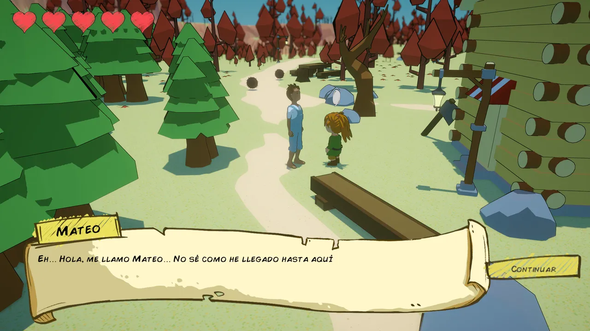
La isla
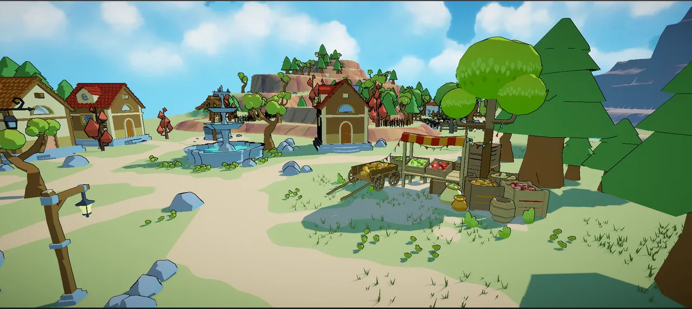
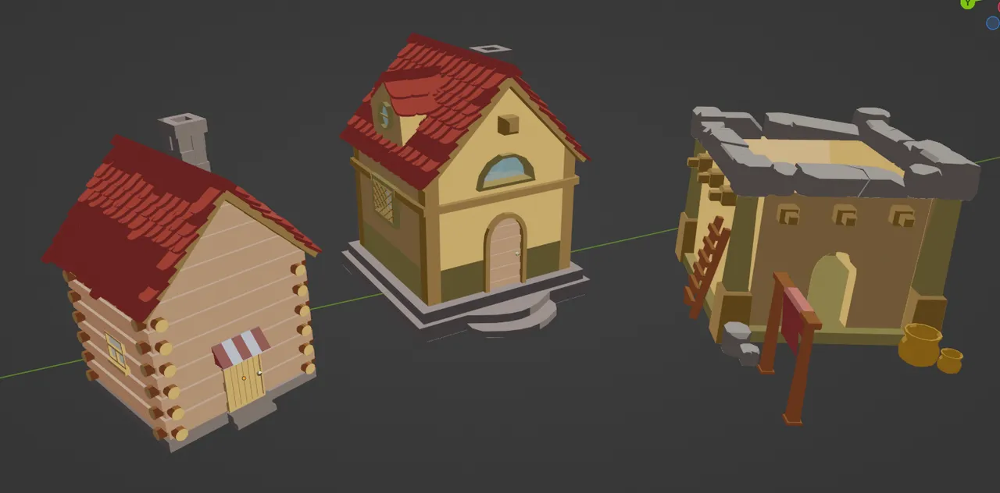
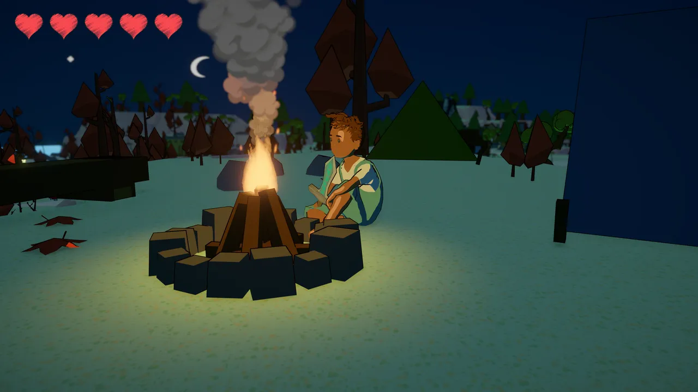
Interfaz y arte 2D
Dibujé toda la interfaz en Clip Studio Paint para que pareciera un cuento antiguo: diálogos en pergamino, botones e iconos de objetos dibujados a mano.
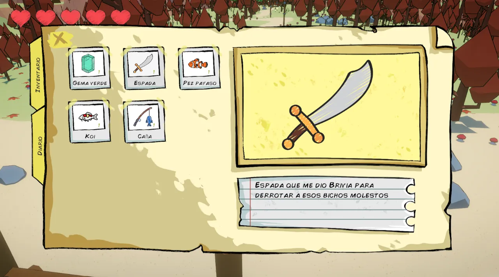
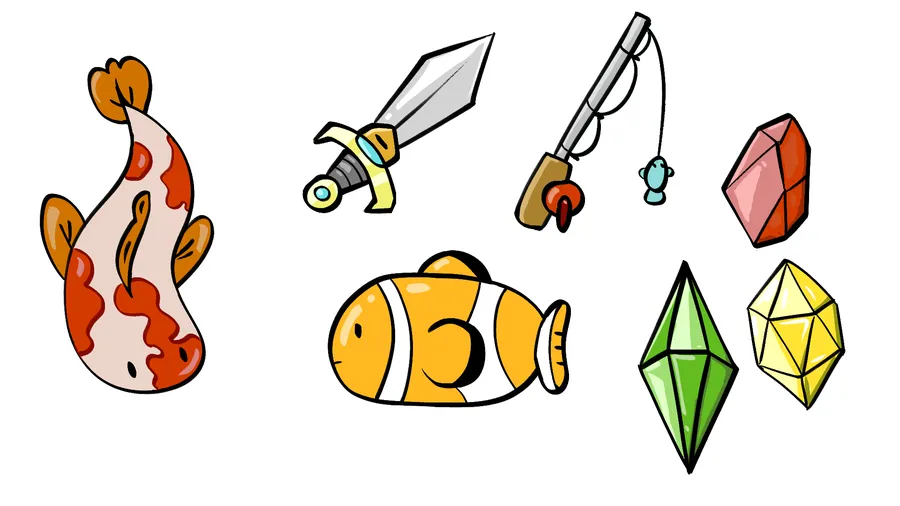
Qué hice
- Todo el código de juego en C#: control del personaje, cámara con Cinemachine, combate y enemigos, misiones, inventario, diario, mapa y un minijuego de pesca, conectados mediante eventos.
- El editor de diálogos y su parser dentro del juego.
- Los shaders toon y de agua en URP Shader Graph.
- Todos los personajes y la mayoría de los objetos, modelados y texturizados en Blender.
- Optimización para un terreno grande: LODs y occlusion culling.
Resultados
- Una demo completa y jugable, con principio y final, tres personajes con misiones secundarias y enemigos.
- Presentado en el Congreso Español de Videojuegos (CEV).